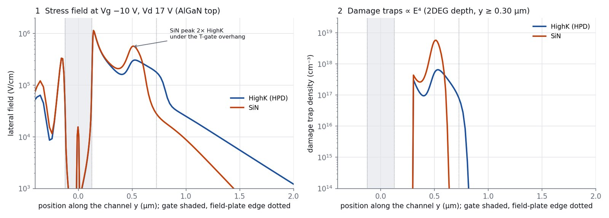
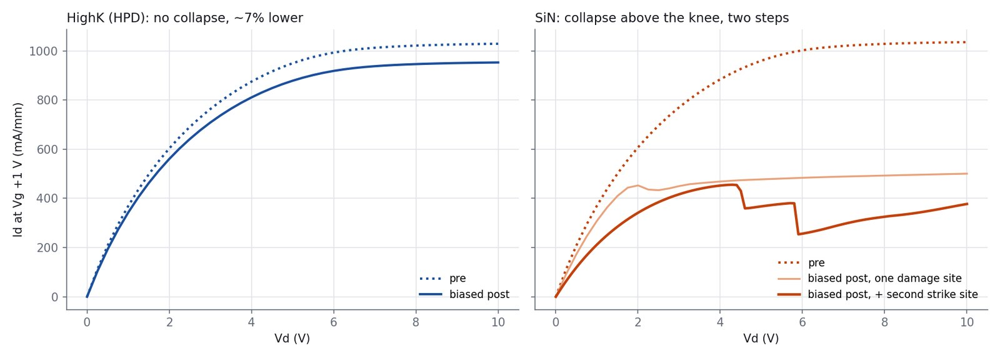
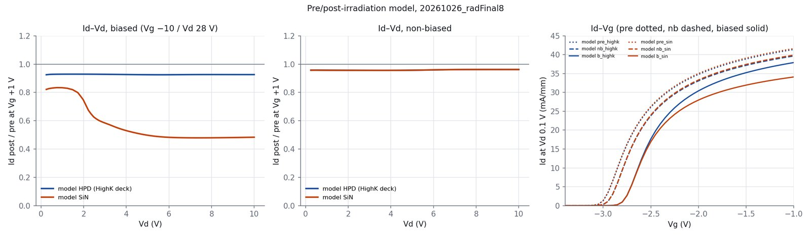

A pre/post-irradiation model for the Y2 high-LET set (HPD #11 with HfO₂ passivation vs SiN #35, both irradiated at Vg −10 V, Vd 28 V). The stress bias places damage where the field is strongest; the SiN passivation focuses that field into one spot just past the gate, and that spot is what collapses the drain current.
Not to scale vertically. Under stress the field peaks at the gate's drain edge in both devices; there is no electron population there and the model leaves it undamaged (a fitting choice, see Limits). The second peak, under the T-gate overhang near y = 0.5 µm, is twice as high with SiN. Damage scales as field⁴, so that spot gets about ten times more traps in SiN.
Every device is computed in the same order. Pre-irradiation devices stop after step 1; non-biased devices skip the stress-placed damage.
Polarization charge 1e13 cm⁻², Schottky barrier 2.94 eV, mobility vsat 1.75e7 cm/s, µmax 2100. Vth within 0.03 V, Id–Vd at Vg +1 within ~4%.
Gate to −10 V, then the drain in 1 V steps. The solve converges up to Vd 17 V (target 28 V), and the lateral field there is stored.
Acceptor traps at 0.30 eV in the top 50 nm, density 7e18 · (E/5e5 V/cm)⁴ beyond y = 0.30 µm. All devices: fixed charge 5e17 cm⁻³ in the AlGaN under the gate and −4e11 cm⁻² at the surface.
Id–Vg at Vd 0.1 V and Id–Vd at Vg +1 V. Hot electrons fill the traps once they clear a 0.5 eV barrier, so the current drops only above a threshold Vd.

The two devices share the same gate, field plate and mesh; only the passivation's permittivity differs (εr 35 for HfO₂, 6.3 for SiN).
Before irradiation the two decks give the same current to within 1%, as the measured pre-irradiation curves do.

In the SiN device the current follows the pre-irradiation curve with a low-Vd loss until hot electrons reach the damage, then drops in a step near 4.5 V. A second, hand-placed strike site further toward the drain adds a second step near 5.8 V; after it the current creeps back up, as on the curve tracer.
The HighK device keeps its shape, a few percent below pre-irradiation.

| Observed after irradiation | Model | Match |
|---|---|---|
| Threshold shifts positive in every irradiated device | +0.21 V, all devices | yes |
| HPD biased: no collapse, transconductance kept | 0.93 flat, gm −2% | yes |
| SiN biased: collapse well above the knee, in two steps, then creep | steps 4.5 / 5.8 V | with 2nd site |
| SiN biased loses the most transconductance | gm −18% (HighK −2%) | order |
| SiN final current level after collapse | 377 mA/mm at 10 V | a bit high |
| Non-biased devices change little | 0.95, gm −1% | yes |
| Gate–drain leakage after biased irradiation | lumped resistor | not physical |
| Driver and levers | drivers/radIV.tcl |
| Final parameter sets | sweeps/params_radFinal8.txt · params_radFinal11.txt |
| Write-up, run history, caveats | kb/results/rad-model.md |
| Figures | analysis/plot_radMechanism.py · plot_radFinal.py |
| Comparison with the measured curves | data/rad_y2/compare/ (workstation only) |